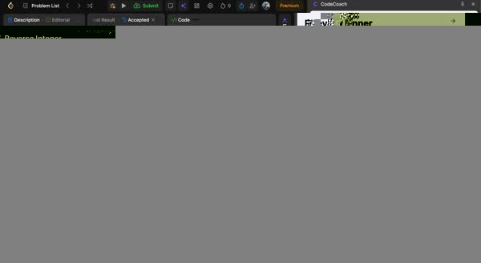

Progressive AI hints
Choose a light nudge, an algorithm direction, or a specific next step without jumping straight to full accepted code.
CodeCoach is an AI LeetCode tutor and coding interview coach that gives progressive hints, reviews your current code, helps debug failed attempts, and turns mistakes into a focused review plan. It also works on Programmers.

CodeCoach is designed for the moment when you are stuck but still want to solve the problem yourself. It reads the visible problem context and your current editor state, then gives only the level of help you request.
Choose a light nudge, an algorithm direction, or a specific next step without jumping straight to full accepted code.
Review your approach, time and space complexity, edge cases, selected lines, runtime errors, and visible failed-test output.
Turn a failed attempt into a structured study note so the mistake becomes something you can review instead of repeat.
Track recurring algorithm patterns and implementation mistakes such as binary-search boundaries, traversal errors, and off-by-one bugs.
Save problems for later review, prioritize failed attempts, and build a repeatable interview-prep loop instead of an endless problem list.
Practice on LeetCode and Programmers / 프로그래머스 directly in the problem page with the same coaching workflow.

Your OpenAI API key, saved code snapshots, wrong-answer notes, settings, and local study history are stored in your browser. AI requests go directly from the extension to OpenAI using your own API key. Optional account and learning-metadata sync is available only when you enable it.
The coaching flow is built around progressive help instead of immediately returning a complete accepted solution. You control how much guidance is revealed.
Yes. CodeCoach supports both LeetCode and Programmers practice pages.
An OpenAI API key is required for AI-powered coaching features. The key is stored locally in your browser and requests are sent directly to OpenAI.
No. CodeCoach is a practice tool and is not intended for active contests, certifications, hiring tests, private assessments, or similar evaluations.
Install CodeCoach, open a LeetCode or Programmers problem, and keep the hard part of interview prep—the reasoning—in your hands.
Add to Chrome